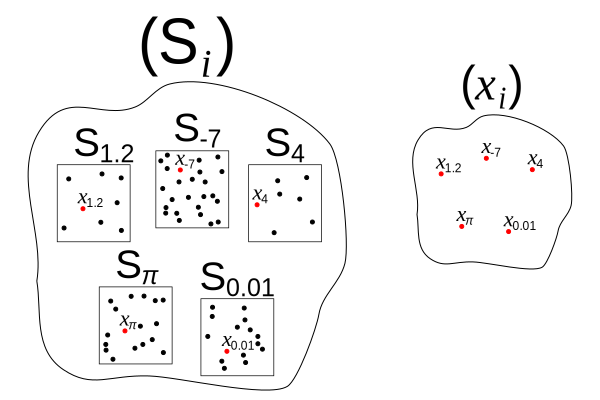
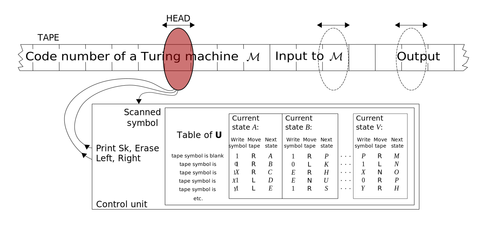
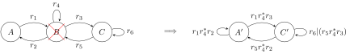

Математические модели вычислений
Entscheidungsproblem (проблема разрешения). Машина Тьюринга. Конечные автоматы и формальные языки.
Максим Александрович Кривчиков, к.ф.-м.н., н.с. МГУ имени М. В. Ломоносова
Материалы курса: https://maxxk.github.io/formal-models/
Формальная верификация → формализация математики
Для проведения формальной верификации функциональных свойств программ необходимо получить математическое описание таких свойств.
Программы объёмны и сложны по своей структуре, поэтому можно предположить, что доказательства их свойств тоже будут не проще.
⇒ Необходимо получить описание программ, их функциональных свойств и доказательств соответствия в форме, которая допускает автоматизированную проверку.
Кризис оснований математики
http://personal.us.es/josef/pcmCrisis.pdf (использовано в презентации)
https://en.wikipedia.org/wiki/Foundations_of_mathematics#Foundational_crisis
К концу XIX века имела место дискуссия о новых подходах в математике, разработанных, в частности, Гауссом, Дирихле и используемых Дедекиндом. Основные положения этих методов:
- Допускается использовать понятие «произвольной» функции.
- Допускается использовать бесконечные множества (а также рассуждать о континууме и т.д.).
- «Размышления предпочтительнее вычислений» (Дирихле), нужно отдавать предпочтение изучению аксиоматически описываемой структуры объектов.
- Допускаются теоремы существования, не описывающие способ построения объекта.
Парадоксы теории множеств
В начале XX века был представлен ряд парадоксов наивной теории множеств, связанный с широко обсуждаемыми с конца XIX века метаматематическими концепциями — в первую очередь связанных с допустимостью тех или иных определений.
Парадокс Б. Рассела (Цермело – Рассела, 1901-02) («парадокс брадобрея»): Брадобрей бреет в точности тех горожан, которые не бреются сами. Кто бреет брадобрея?
R = { x | x ∈ x } ⟹ ( R ∈ R ⇔ R ∉ R )
Ошибка — возможность определения «множества всех множеств».
Парадоксы теории множеств
Парадокс Бурали-Форти: пусть x — ординал, а ∪x — верхняя грань x. Для Q — множества всех ординалов, ∪Q+1 — ординал, который не лежит в Q.
Ошибка — возможность определения множества элементов, обладающих произвольным свойством.
Ординал — транзитивное множество, которое является полным порядком по отношению включения
⇒ математика в опасности
Предикативность
Пуанкаре (1903). Импредикативное определение — определение, которое ссылается само на себя. С позиций теории множеств определение импредикативно, если оно использует (в нём упоминается, или в нём используется квантификация по) само определяемое множество, или другое множество, которое содержит определяемое.
Использование только предикативных определений, таким образом, должно прервать «порочный круг».
Пример. Натуральные числа по Дедекинду. ℕ есть пересечение всех множеств (= минимальное множество), которые содержат 1 и замкнуты под инъективной функцией σ, такой, что 1 ∉ σ(ℕ).
Теория типов (Рассел, Уайтхед)
(B. Russel, A.N. Whitehead. Principia Mathematica. Cambridge University Press, 1910)
Парадоксы можно исключить, если рассматривать только множества с единообразными элементами (например, элементы множества { {a}, {b} } единообразны, а элементы множества { {a}, b } — нет).
Конструктивизм и интуиционизм
Конструктивизм (общий подход) — доказательство существования объекта обязательно должно строить объект. Доказательства существования от противного (пусть объекта не существует, тогда приходим к противоречию) не допускаются.
Интуиционизм (Брауэр) — исходное направление конструктивизма, в котором утверждается, что математика субъективна (является результатом конструктивной мыслительной деятельности), а следовательно математическое исследование должно заключаться не в доказательстве «универсально истинных» теорем, а в поиске математических (умственных) конструкций, органично соединяющих в себе построение и его обоснование.
Конструктивизм и интуиционизм
Примеры:
- диагональный процесс Кантора (доказательство несчётности множества действительных чисел ℝ) конструктивен
- классическая формулировка действительного анализа (теории меры Лебега) неконструктивна, но может быть сделана конструктивной если ограничиться рассмотрением функций в форме поточечных пределов непрерывных функций (нестрого).
Закон исключённого третьего
p ∨ ¬p → true для всех p
Брауэр: логические принципы построены на основе нашего опыта работы с конечными множествами, их нельзя распространять на бесконечные. Связка «или» (a ∨ b) может употребляться только после того, как одна из альтернатив была доказана.
Конструктивизм: закон исключённого третьего с точки зрения конструктивизма даёт аппарат разрешения любых утверждений, а такой аппарат (забегая вперёд) построить нельзя.
Аксиома выбора
Классическая формулировка: для всякого семейства (Si)i∈I непустых множеств существует функция выбора f, которая каждому множеству семейства сопоставляет один из элементов этого множества. Для бесконечных семейста независима от утверждений теории множеств. В некоторых конструктивных теориях допускаются более слабые формулировки аксиомы выбора, из которых не следует закон исключённого третьего.

Формализм
— все математические утверждения записываются в виде формул (строк символов), которые переписываются по конечному набору правил, про которые известно, что они не дадут парадоксов.
Д. Гильберт предложил такой подход для того, чтобы «раз и навсегда очистить мир от всех скептических сомнений» в части справедливости классических теорий математики.
Формализм
- Сформулировать строгие синтаксические аксиомы и правила вывода (переписывания).
- Доказать 3 простых свойства, которые показывают, что аксиомы «хорошие» (программа Гильберта):
- Полнота (мы можем переписыванием получить из аксиом все истинные утверждения математики)
- Непротиворечивость (мы не можем получить переписыванием из аксиом ложное утверждение)
- Разрешимость (руководствуясь простым набором правил можно для любой формулы получить, выводима она или нет).
- Представить основные теоремы анализа в терминах этой системы
Проблема разрешения (Entscheidungsproblem)
В более широком смысле задача разрешения некоторого, возможно параметризованного, утверждения — это задача построения эффективного алгоритма, который принимает на вход параметр и всегда даёт ответ: значение 0, если утверждение неверно для параметра, или значение 1, если утверждение верно для параметра.
В узком смысле проблема разрешения — это вопрос, является ли разрешимой истинность формул логики первого порядка, которая предполагалась Гильбертом в качестве основного кандидата программы.
Как строго определить «эффективный алгоритм»?
Машина Тьюринга
- Бесконечная лента, разделённая на ячейки, в каждой из которых находится символ из алфавита Γ, один из символов «пустой»
- Состояние машины q ∈ Q
- Читающая и пишущая головка над лентой на каждом шаге считывает символ, обрабатывает его, записывает новый символ в ячейку и сдвигается влево, вправо или останавливается
- Инструкции вида: если в состоянии q считан символ a, то перейти в состояние r, записать символ b и переместить головку вправо/влево/остановить вычисления 
Машина Тьюринга формально
Семёрка:
- Q — конечное, непустое множество состояний
- Γ — конечный непустой алфавит ленты
_∈ Γ — пустой символ, только он может быть на ленте бесконечное число раз- Σ ⊆ Γ \ {
_} — набор входных символов (оставшиеся Γ \ {_} \ Σ — служебные символы) - F ⊆ Q — множество конечных состояний (часто состоит из одного состояния
HALT) - δ : (Q \ F) × Γ → Q × Γ × { L, R } — частичная функция перехода; если попадается пара (состояние, текущий символ), на которой δ не определена, машина останавливается.
- q0 ∈ Q — начальное состояние
Интерактивная демонстрация машины Тьюринга
Механическая модель машины Тьюринга: https://www.youtube.com/watch?v=WJ-ODmFjmrU
Модель машины Тьюринга из LEGO: https://www.youtube.com/watch?v=FTSAiF9AHN4
Интерактивная реализация в браузере: http://morphett.info/turing/turing.html
Универсальная машина Тьюринга
— машина Тьюринга, которая на вход получает код произвольной машины M и её входные данные, и выполняет машину M на данном входе.
David Bevan, файл utm.pdf по адресу http://tinyurl.com/M269resources
Эмулируются машины ленты с алфавитом Γ = { _, 0, 1 }.
Состояние ленты универсальной машины Тьюринга U, эмулирующей машину M:
_ _ слева-от-головки [ M' ] текущая-ячейка справа-от-головки _ _
M' — код машины с текущим состоянием.
Фактически универсальная машина хранит код головки слева от текущей ячейки эмулируемой машины.
Универсальная машина Тьюринга: код машины
Пусть M имеет m состояний q1, ..., qm, а состояние машины на текущем шаге (активное состояние) — qC.
Тогда код машины M' записывается в виде последовательности кодов правил перехода, разделёнными знаком : (состояние на текущем шаге отделяется от следующего знаком !): q'1:q'2:...:q'C!q'C+1:...:q'm
Для правил перехода вида:
qi, _ → новый-символ_, направление-сдвига_, qj
qi, 0 → новый-символ0, направление-сдвига0, qk
qi, 1 → новый-символ1, направление-сдвига1, ql
Код правил перехода записывается через запятую:
новый-символ_ направление-сдвига_ σi-j , новый-символ0 направление-сдвига0 σi-k, новый-символ1 направление-сдвига1 σi-l
где σa-b = ., если a = b,
σa-b = +a-b, если a > b,
σa-b = –b-a, если a < b
Если пара (состояние, входной-символ) описывают конечное состояние, то его код — пустая последовательность символов.
Универсальная машина Тьюринга: реализация
Алфавит: _ 0 1 [ ] , : ! L R . + - # < > Перед началом исполнения U устанавливает головку справа от ]. Исполняется следующая последовательность действий до остановки на шаге 4:
- Считать символ s.
- Найти активное состояние сдвигаясь влево до
!. - Найти подходящее правило перехода: в зависимости от того, равен ли s
_,0или1сдвинуться влево от 2-й, 1-й или 0-й запятой, соответственно. - Если текущее правило пусто, остановиться.
- Иначе, пометить активное правило, заменяя значения σ:
.на#,+на>,-на<. - Считать для активного правила новый-символs, сдвинуться вправо от
]и записать его значение. - Вернуться к активному правилу, считать направление-сдвигаs
- Сдвинуть виртуальную головку (код M') в направление-сдвигаs
- Изменить текущее состояние, если необходимо: если есть символ
#(состояние не меняется), он заменяется обратно на.; если есть символ<, поменять!местами с ближайшим слева:, заменить<на-. Повторять пока есть один из символов<#>Аналогично для>. - Вернуться вправо от
]на новую виртуальную активную ячейку, перейти к шагу 1.
Универсальная машина Тьюринга: сложность
Шеннон предложил методы реинтерпретации машин Тьюринга с алфавитом размером m и количеством состояний n:
- на машине из двух состояний с алфавитом размером не более 4mn + m;
- на машине с алфавитом размера 2, имеющей не более 8nm состояний;
- ⇒ Можно «перекачивать» сложность из состояний в алфавит и обратно.
Проблема останова
Halting problem
Можно ли для данной универсальной машины Тьюринга построить алгоритм, который принимает на вход произвольный код программы M и вход I, и выводит 1, если машина M останавливается на входе I и 0, если не останавливается.
[Есть ли общий способ понять, остановится ли заданная машина на заданном входе]
Неразрешимость проблемы останова
Проблема останова неразрешима, такой алгорим построить нельзя. От противного: пусть такой алгоритм построен в виде машины Halt(M, I). Построим следующую машину Z с одним входом X (машина частичного разрешения):
Если Halt(x, x) то уйти в бесконечный цикл.
Иначе остановиться.Чему равно Halt(Z, Z)?
- Если машина
Zостанавливается на входеZ, тоHalt(Z, Z)возвращает1. Но тогда машинаZдолжна уходить в бесконечный цикл на входеZ. - Если машина
Zне останавливается на входеZ, тоHalt(Z, Z)возвращает0. Тогда машинаZдолжна остановиться на входеZ.
Таким образом, Halt не может существовать.
Формальные языки
Формальный язык L над алфавитом Σ — подмножество всех конечных строк L ⊆ Σ × Σ × … × Σ × ….
Задача разрешения утверждения сводится к задаче определения принадлежности строки заданному утверждением формальному языку.
Пример: проверка числа на простоту = проверка того, принадлежит ли число формальному языку «десятичные записи простых чисел».
Формальная грамматика
— способ задания формального языка (семейства формальных языков) в виде некоторой последовательности правил.
Выделяют:
- распознающие грамматики, которые описывают алгоритм задачи разрешения (является ли число простым?);
- порождающие грамматики, которые генерируют слово языка (1274-е по порядку простое число);
- перечисляющие грамматики, которые последовательно выводят все слова языка (вывести все простые числа);
Формальная грамматика: мотивация
Корректность алгоритма — свойство, согласно которому для любого входа алгоритм завершается и возвращает решение задачи для этого входа (или, скажем, некоторый признак ошибки, если алгоритм неприменим к заданному входу). Т.е. «программа должна выводить правильный ответ, никогда не падать и никогда не зависать».
В связи с неразрешимостью проблемы останова, мы не можем описать множество всех корректных алгоритмов (решить в общем виде задачу верификации программ). Но можно попробовать ограничить набор задач, которые мы хотим решать так, чтобы все задачи такого ограниченного набора имели решение.
Конечные автоматы
Ограничим машину Тьюринга следующим образом: в начале вычислений головка расположена на первом непустом символе ленты слева, и на каждом шаге продвигается направо, считывая по одному символу. После того, как головка достигла последнего непустого символа входных данных справа, вычисление прекращается.
Получаем модель детерминированного конечного автомата. Конечный автомат (finite automaton) — это четвёрка:
Q — множество состояний
I, O — входной и выходной алфавит (конечные множества)
δ : I × Q → O × Q — функция перехода
q0 ∈ Q — исходное состояние
Конечные автоматы
Недетерминированный конечный автомат может находиться сразу в множестве состояний Q' ⊆ Q; функция перехода, таким образом, определена на множестве подмножеств Q. Они эквивалентны детерминированным конечным автоматам, которые имеют множество состояний 2Q.
Распознающий автомат — рассматриваем автомат без выхода и выделяем подмножество конечных (распознающих) состояний F ⊂ Q. Если после обработки последнего символа входного слова распознающий автомат находится в состоянии f ∈ F, то автомат распознал слово.
Регулярные языки
Индуктивное определение:
Пустое слово ⊘ и пустой язык { _ } — регулярные языки.
Для любой буквы алфавита a ∈ Γ, { a } — регулярный язык.
Объединение регулярных языков — регулярный язык { a } ∪ { b } = { a, b }.
Конкатенация регулярных языков — регулярный язык { a } · { b } = { ab } (последовательность из слов первого языка, за которыми идут слова второго языка).
Звёздочка Клини для регулярного языка — регулярный язык { a, b }* = { ε, a, b, aaa, abab, … } (последовательности любой длины из слов исходного языка).
Языки, которые не могут быть построены перечисленными конструкторами — не регулярны.
Теорема Клини
Регулярные языки в точности соответствуют формальным языкам, которые может распознать конечный распознающий автомат. Схема доказательства:
Теорема Клини
Языки, распознаваемые автоматами, регулярны. Расширим графовое представление конечного автомата: разрешим помечать рёбра регулярными выражениями. Приведём автомат к виду с единственным конечным состоянием (если конечных состояний несколько, добавим новое конечное состояние и проведём рёбра, помеченные ε). Будем последовательно удалять промежуточные состояния: 
В завершение процесса останется автомат с одним начальным и одним конечным состоянием: 
Тогда эквивалентное регулярное выражение: (r1 | r2 r4* r3)* r2 r4*
Лемма о накачке для регулярного языка
Какими свойствами ограничены регулярные языки? Все конечные языки регулярны, поэтому рассмотрим только бесконечные. Оказывается, для любого бесконечного регулярного языка у всех достаточно длинных слов можно копировать «середину» сколько угодно раз так, что получающаяся в итоге строка тоже будет принадлежать языку.
Формально: если L — бесконечный регулярный язык, то существует натуральное n > 0, такое, что в любом слове x ∈ L длиннее, чем n, можно выделить части u, v, w (x = u·v·w), так, что |uv| < n, |v| > 0 и для всех k > 0, u·vk·w ∈ L.
Применение: если в языке для любого n можно получить такое слово, для которого никакую «середину» нельзя повторить, оставаясь в языке, то этот язык нерегулярный. Пример: L = { 0n1n | n ⩾ 0}.
Схема доказательства леммы о накачке
Общая схема доказательств: строим детерминированный конечный автомат для L. Возьмём n — число состояний. После обработки первых n букв слова x автомат принимает n+1 состояние, т.е. хотя бы два из них одинаковы. Таким образом, в ориентированном графе состояний есть цикл. Выделим цикл и возьмём в качестве «середины» v ту часть x, которая полностью проходит этот цикл.
Мы можем сколько угодно раз копировать «середину» — и при распознавании автомат будет ходить по этому циклу, но после завершения он всё пойдёт по тому же пути для конца слова w, что и для исходного слова x.
Контекстно-свободные языки и МП-автоматы
— генерируются контекстно-свободной грамматикой, распознаются автоматом с магазинной памятью. Автомат с магазинной памятью — конечный автомат со сколь угодно большим стеком. На каждом шаге автомат может положить символ на вершину стека или снять символ с вершины стека. 
Лемма о накачке для контекстно-свободного языка
Формулировка аналогична случаю регулярных языков, но слово = u v w x y, удлинняющееся слово — u vn w xn y. Неформально — разбор w оставляет стек в том же состоянии, что и приняло, разбор v пополняет стек, разбор x снимает со стека данные, записанные при разборе v.
Иерархия Хомского
(Noam Chomsky, 1956)
- регулярные языки: ∅, a ∈ Σ, A ∪ B, A ∩ B, A* (любой конечный язык и некоторые бесконечные; распознаются детерминированным конечным автоматом)
- контекстно-свободные языки (произвольное количество парных скобок (n)n — контекстно-свободный язык, распознаются автоматом с магазинной памятью (стеком))
- контекстно-зависимые языки (произвольное количество троек (n|n)n — контекстно-зависимый язык, распознаются линейно-ограниченным автоматом — машиной Тьюринга с лентой, длина которой линейно зависит от длины входа)
- неограниченные языки (распознаются машиной Тьюринга)
Контекстно-зависимые языки на практике
Если есть алгоритм, который решает задачу с использованием линейного количества дополнительной памяти (относительно длины кодированных входных данных), то алгоритм можно реализовать для линейно-ограниченного автомата и, следовательно, можно построить контекстно-зависимую грамматику.
Пример задачи проверки простоты числа — контекстно-зависимый.
Пространства сложности
P — распознаётся детерминированной машиной Тьюринга за количество шагов (время), полиномиальное по длине входа.
NP — время выражается как полином для недетерминированной машины Тьюринга (неформальное определение — «ответ можно проверить за полиномиальное время»)
NPC — любая задача из NP за полиномиальное время может быть сведена к такой задаче
Busy beaver
Задача: построить всегда останавливающуюся машину Тьюринга на двоичном алфавите, которая записывает наибольшее число 1 на ленту, используя ограниченное количество состояний (или которая выполняет наибольшее количество шагов без остановки).
Известны следующие реализации:
2 состояния — 6 шагов, 4 единицы
3 состояния — 21 шаг, 6 единиц
4 состояния — 107 шагов, 13 единиц
5 состояний — ⩾ 47 млн шагов, ⩾ 4098 единиц
6 состояний — > 7.4 · 1036534
Задачи
- Задача 2.1. **
- В предположении, что задан код
Halt, реализовать машинуZв интерпретаторе универсальной машины Тьюринга. - Задача 2.2. **
- Написать интерактивный эмулятор машины Тьюринга. Эмулятор должен допускать описание машины (в каком-то виде); пошаговое исполнение с выводом состояния на каждом шаге; исполнение до останова.
- Задача 2.3а *
- Привести пример контекстно-свободного, не регулярного языка (не anbn) с доказательством.
- Задача 2.3б *
- Привести пример контекстно-зависимого, не контекстно свободного языка (не anbncn) с доказательством.
- Задача 2.3в **
- Привести пример неограниченного языка (с доказательством того, что он является неограниченным).
Задачи
- Задача 2.4а. *
- Реализовать в интерпретаторе машины Тьюринга сравнение двух унарных чисел (на входе — два унарных числа, на выходе — 0, если первое больше второго и 1 — если второе больше первого или они равны).
- Задача 2.4б. **
- Реализовать в интерпретаторе машины Тьюринга унарное деление с остатком (на входе — два унарных числа, разделённых нулём; на выходе — частное и остаток).
- Задача 2.5. ***
- Мини-обзор (хотя бы 10 статей/книг, по каждой — описание в 2-4 предложениях) по тематике «Ограничения машин Тьюринга, гарантирующие завершимость программ» (за пределами рассмотренных конечных автоматов, автоматов с магазинной памяьтю и линейно-ограниченных автоматов).
- Задача 2.6. **
- Найти содержательную арифметическую задачу, решение которой — контекстно-свободный язык.